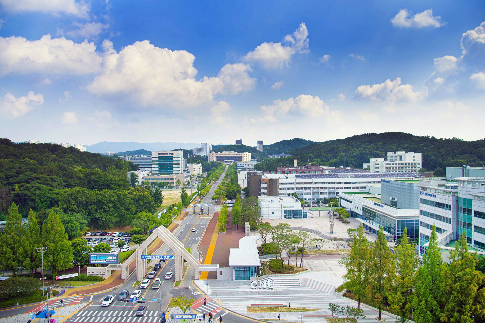

지역을 새로고침하다
F5 프로젝트
빈집 재생, 복지 공간 조성, 의료봉사까지—
대학·기업·지역이 함께 만드는 지속 가능한 상생 모델
Refreshing communities through ESG collaboration between university, business, and local government
F5 새로고침 프로젝트
Chungnam National University ESG Center
왜 F5인가?
컴퓨터의 '새로고침(F5)'처럼, 소멸해가는 지역을 새롭게 되살립니다.
F5 새로고침 프로젝트는 충남대학교 ESG센터가 주관하는 대표 사회공헌 브랜드입니다. 지방소멸 위기에 처한 지역에 대학·기업·지자체가 협력하여 실질적인 변화를 만들어냅니다.
The F5 Project is named after the keyboard's refresh function — just as F5 refreshes a page, we aim to refresh communities facing decline through ESG-based university-business-local government collaboration.

3대 세부 사업
F5 새로고침 프로젝트는 세 가지 사업으로 지역의 삶을 총체적으로 개선합니다.
 Ⅰ
PROJECT I
Ⅰ
PROJECT I
주거취약계층
정주환경 개선
Housing Environment Improvement
주거 취약계층의 낙후된 생활환경을 기업·기관 협력으로 개선하여 안전하고 쾌적한 정주여건을 제공합니다.
🏠 주거환경 개선 Ⅱ
PROJECT II
Ⅱ
PROJECT II
지방소멸지역 빈집 재생
상생협력 공간 조성
Vacant House Regeneration × ESG Co-prosperity Space
소멸위기 지역의 빈집을 매입·리모델링하여 중소기업 임직원 복지 공간으로 제공. 지역 인재 정주와 기업 ESG를 동시에 실현합니다.
🌿 빈집 재생 · ESG 상생 Ⅲ
PROJECT III
Ⅲ
PROJECT III
인구소멸지역
찾아가는 의료봉사
Mobile Medical Service for Depopulating Areas
충남 9개 인구감소 시·군을 찾아가는 의료서비스와 보건소 연계(Referral) 구조로 의료 공백을 해소합니다.
🏥 의료봉사 · 보건 연계지역 상생과 ESG 실천
E·S·G 세 축으로 사회적 가치를 창출합니다.
Environment 환경 · 유휴 자산의 재탄생
방치된 빈집을 리모델링하여 지역 건물 노후화를 막고 환경적 자산 가치를 새롭게 창출합니다.
- 지방 소멸 지역 빈집 및 유휴 자산 재생
- 낙후 건물 리모델링으로 환경 개선
- 지속가능 건축 설계 적용
Social 사회 · 지역 사회 활력 제고
중소기업 임직원 복지 인프라 확대와 체류형 인구 유입을 통해 지역 경제에 새로운 활력을 불어넣습니다.
- 중소기업 임직원 '감성 숙소' 복지 제공
- 체류형 인구 유입을 통한 지역 활성화
- 의료취약 계층 건강 접근성 개선
Governance 거버넌스 · 지속 협력 체계
대학-기업-지역 간 4축 협력 거버넌스로 일회성 봉사가 아닌 지속 가능한 상생 모델을 구현합니다.
- 대학-기업-지역 지속 가능한 협력 모델
- ESG 기반 사회공헌 전략 수립
- 앵커(RISE) 연계 대학 지역기여 지표 향상
F5는 계속 성장합니다
파트너와 함께 새로운 챕터를 써 나가고 있습니다.
활동 소식

충남 9개 시·군 주거환경 개선 봉사활동 완료
독거노인·장애인 가구 대상 주거환경 개선 활동을 성공적으로 마쳤습니다.

빈집 재생 상생협력공간 조성 계획 수립
지방소멸 대응 빈집 재생 상생협력공간 조성을 위한 기본계획을 수립했습니다.

리사이클링 아트캠퍼스 기본계획 발표
대전·충남·세종 3개 도시 연계 초광역 문화예술 플랫폼 조성 계획 공개.